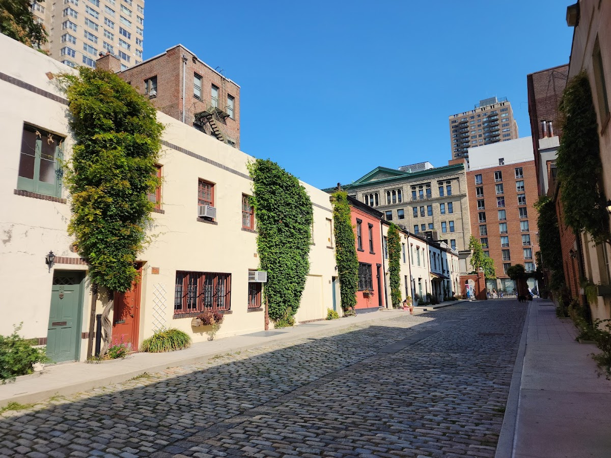
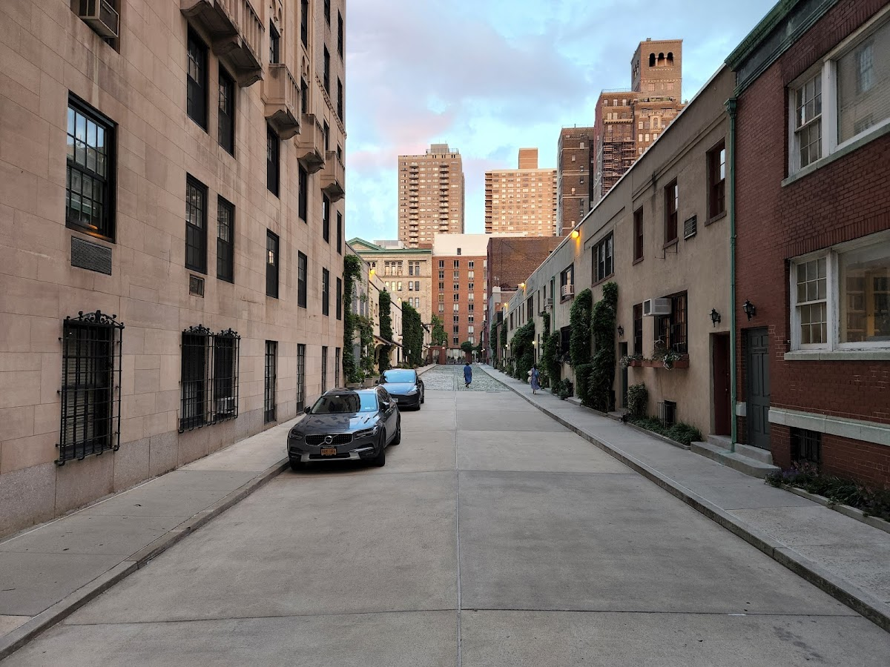
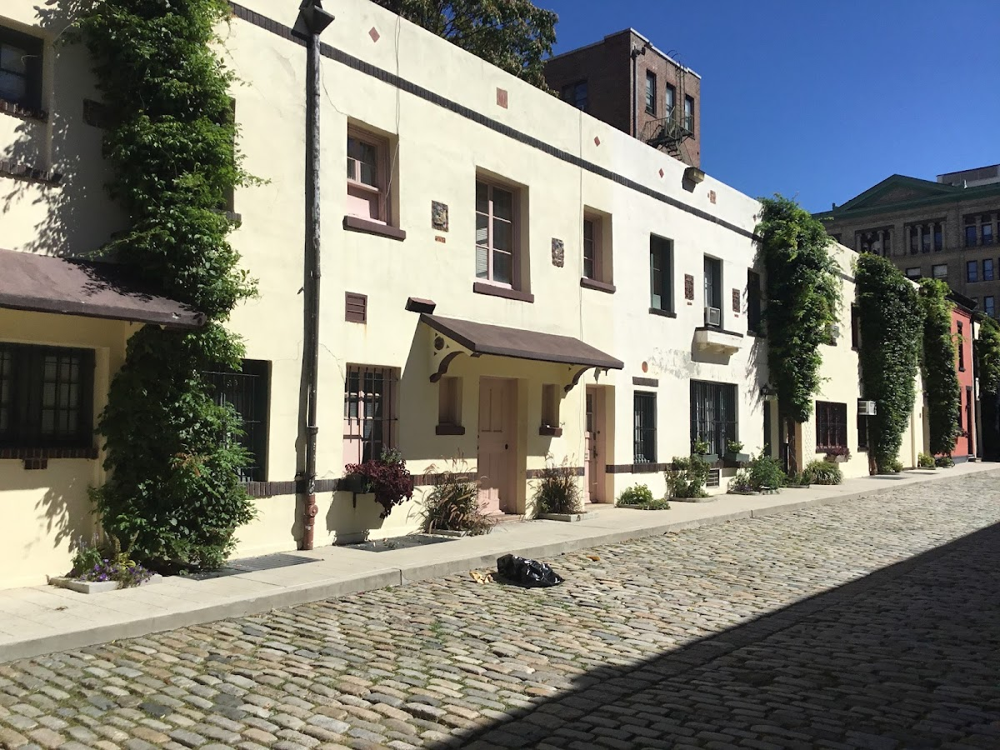
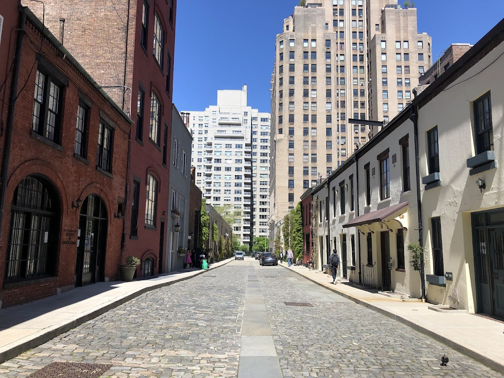
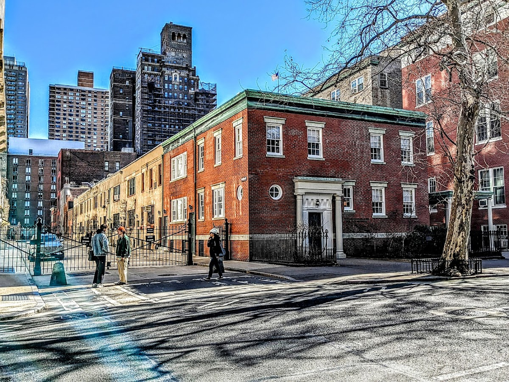

Courts & communities
Washington Mews
A private street in Greenwich Village, originally built as stables for nearby townhouses.
Background
Washington Mews was constructed in the 19th century and later converted into residences and artists' studios. It is now owned by New York University and serves as faculty housing and academic offices, preserving its historic character.
Original AI-assisted background; not independently verified.
From the original map
NYU Staff Housing
Homes and shared residential spaces may be private. View from public streets unless entry is clearly permitted; map pins are reference points, not confirmed entrances.
Nearby places
Straight-line distances, not walking routes.
Discussion & corrections





Photo credits
Jim Kelly, David Herszenson, TheMrscarface2009, Tony, Karina Loja, Christoph Rippler, Supakij Khomvilai, G Aquino40.73158, -73.99595 · Explore the surrounding area ↗